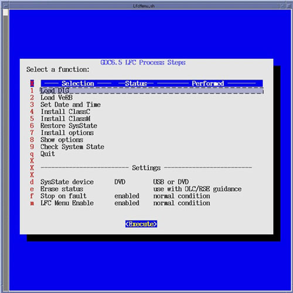
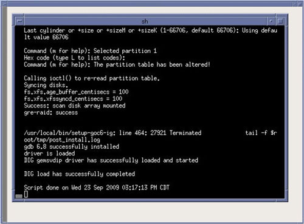

Select [Execute], two shell windows will open and the DIG software will be loaded.
Upon completion of the DIG software load, close the two shell windows to return to the LFC Menu.
Illustration 19: LFC Menu - Load DIG Selection

Illustration 20: Load DIG Execution
